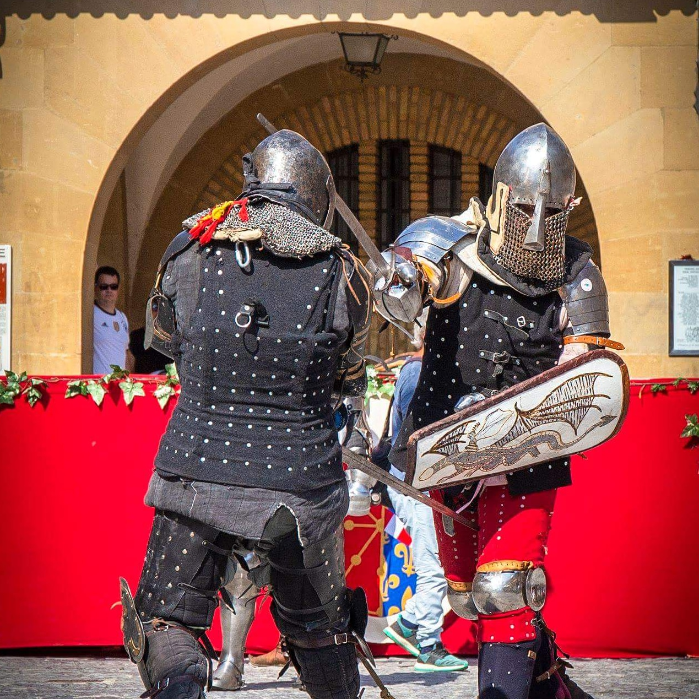
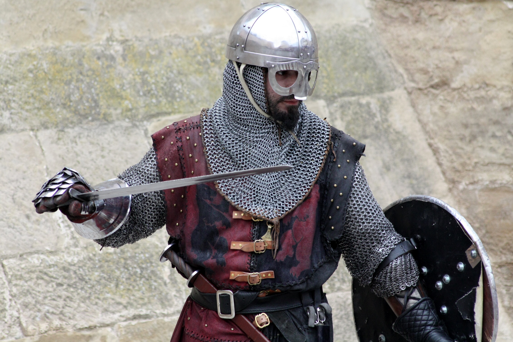
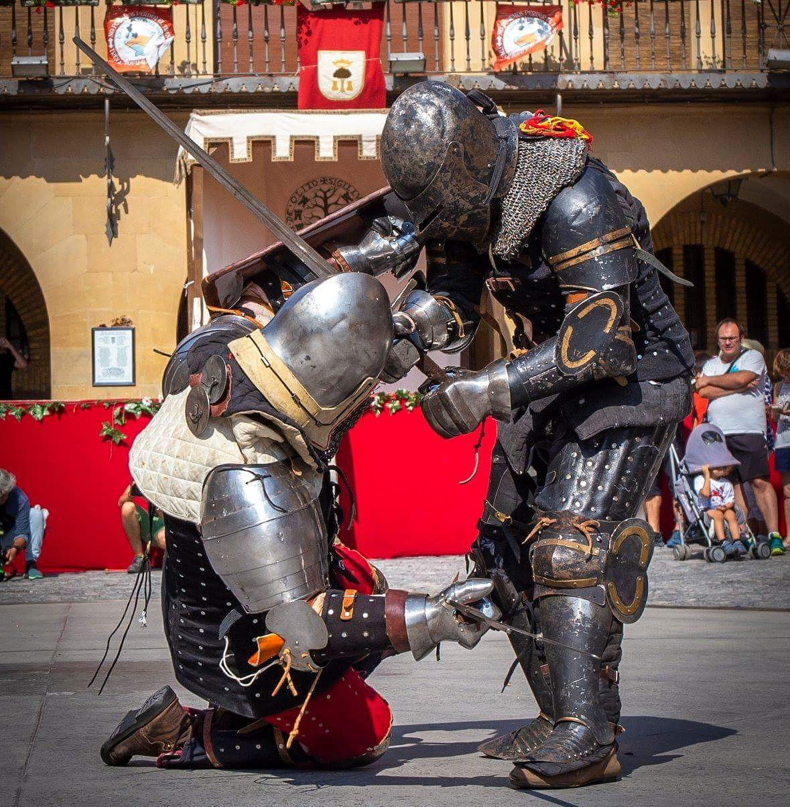
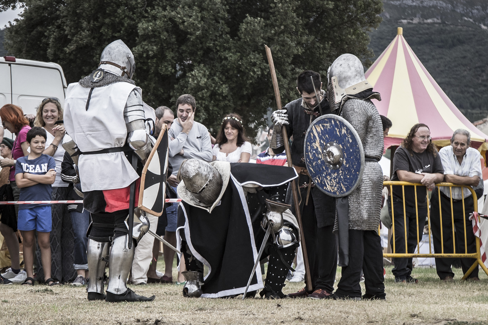

Recreación histórica
Campamentos, vestimenta, armas, oficios, vida cotidiana y escenas documentadas para acercar el periodo medieval al público actual.
 Rioja Medieval
Rioja Medieval
La Rioja · Historia viva
Recreación histórica, combate medieval y cultura viva desde La Rioja
Asociación cultural
Rioja Medieval reúne a personas interesadas en la recreación histórica, la divulgación cultural y el combate medieval deportivo. Su actividad combina investigación, presencia escénica, vida de campamento, armamento histórico, indumentaria y exhibiciones abiertas al público.
Desde La Rioja, la asociación participa en ferias, mercados medievales, jornadas históricas, actividades educativas y encuentros de combate Buhurt, cuidando tanto el rigor histórico como la seguridad de cada demostración.
Qué hacemos
Campamentos, vestimenta, armas, oficios, vida cotidiana y escenas documentadas para acercar el periodo medieval al público actual.

Entrenamiento, disciplina, armaduras reales y combate deportivo reglado con prioridad absoluta en la seguridad.

Participación en mercados, ferias, jornadas culturales, charlas, demostraciones y actividades para instituciones.


Cultura viva
La asociación trabaja la Edad Media como una experiencia cercana: el visitante ve, pregunta, toca materiales, entiende el peso de una armadura y descubre cómo se organizaba un campamento histórico.
Conocer la trayectoriaGalería destacada



Únete
Si te interesan la historia, el combate medieval, la artesanía, la divulgación o los eventos culturales, hay un lugar para participar y aprender.
Contactar con la asociación